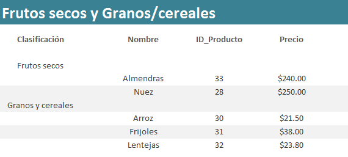
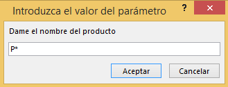
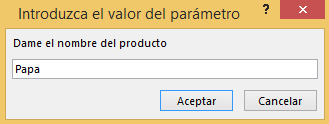
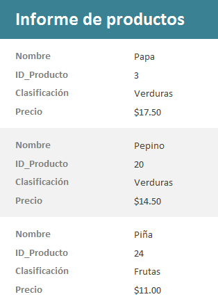
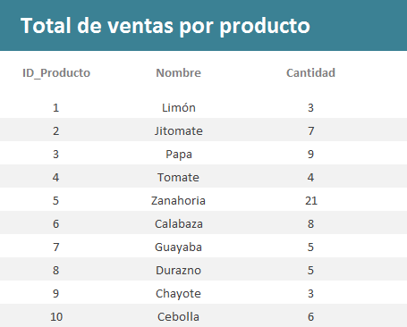
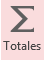
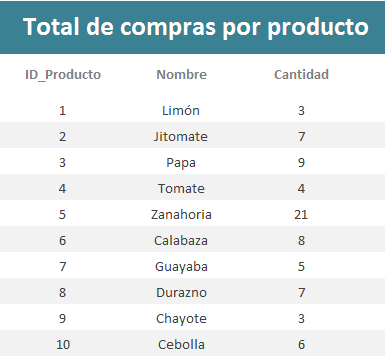
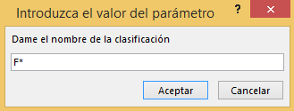
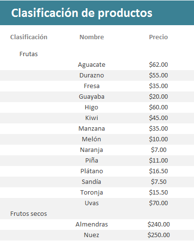

1.
Consulta de "Frutos secos" y "Granos y cereales" (Consulta con
criterios)
- La
frutería y verdulería "La Huerta" requiere que realices una
consulta que muestre todos los productos que pertenecen a la
clasificación de "Frutos secos" y "Granos y
cereales", ya que se desea generar el siguiente informe:


- En la sección de
encabezado de página, ajusta el tamaño de las etiquetas.
- Alinea el contenido de
los cuadros de texto y etiquetas de la mejor forma (izquierda /
centrado
/ derecha)
- Cambia el diseño de tu
informe. Puedes cambiar también el color y el
tipo de letra que más te agrade.
- Checa tu informe,
dando clic en Ver > Vista Informes.
3. Consulta de
Productos por nombre (Consulta de parámetros)
- En la frutería y
verdulería “La Huerta”, existen muchos productos, y los vendedores
no saben de memoria cuáles son todos los que tienen en la tienda y
mucho menos su precio. Por esta razón, crea una consulta de
parámetros para que los vendedores puedan ingresar el nombre del
producto o sus iniciales seguidas de un
asterisco, y se despliegue la siguiente información acerca del
mismo:
a) Nombre
b) ID_Producto
c) Clasificación
d) Precio
- Ordena por Nombre del
producto ascendentemente.
- Guarda la consulta
como Productos por nombre
- Checa los datos
resultados de tu consulta, dando clic en Ver > Vista Hoja de
datos
- Regresa al diseño de
tu consulta, dando clic en Ver > Vista Diseño
- Establece el
criterio Como adecuado para el campo
Nombre
de manera que pida el valor del nombre del producto o sus iniciales
seguidas de un asterisco.
Como [ Mensaje]
- Checa los datos
resultados de tu consulta, dando clic en Ver > Vista Hoja de
datos
- Prueba tu consulta
introduciendo parámetros como P* o introduciendo el nombre
del producto como por ejemplo: Papa.

ó 
:
4. Informe
de Productos por nombre (Informe con distribución en
columnas)
- Utiliza la consulta de
Productos por nombre para generar el siguiente informe.
| 
|
- Ordena la información
en forma ascendentemente por el nombre del producto.
- Distribución:
En Columnas y Orientación: Vertical
- El título del informe
deberá ser Informe de productos
- Del menú, da clic en el botón de Cerrar vista previa de
impresión, para que muestre el informe en Vista diseño.
- Cambia el diseño de tu informe.
Puedes cambiar también el color y el tipo de letra que más te
agrade.
- Checa tu informe,
dando clic en Ver > Vista Informes.
- Prueba tu informe
introduciendo solamente asterisco (*), luego prueba tu informe con
P*
o con el nombre del producto como por ejemplo: Papa.
|
5.
Consulta de ventas por producto (Consultas avanzadas)
- La
frutería y verdulería “La Huerta” desea tener un inventario de sus
productos, por lo que necesita generar un informe que le muestre la
cantidad total que ha vendido por cada producto, por lo que se te
pide crees una consulta donde se despliegue la siguiente
información:

- Agrega la tabla de
Productos (ID_Producto y Nombre) y la tabla de
Notas_Productos
(Cantidad).
- Guarda la consulta
como Ventas por producto.
- Checa los datos
resultados de tu consulta, dando clic en Ver > Vista Hoja de
datos
- Regresa al diseño de
tu consulta, dando clic en Ver > Vista Diseño. Da clic en
el botón de 
Totales y aplica las condiciones de Agrupar por
y Suma a los campos correspondientes.
| Campo |
Total |
| ID_Producto |
Agrupar por |
| Nombre |
Agrupar por |
| Cantidad |
Suma |
- Checa los datos
resultados de tu consulta, dando clic en Ver > Vista Hoja de
datos.
6. Informe del
total de ventas por producto (Informe con distribución tabular)
- Utiliza la consulta de
Ventas por producto
para generar un informe como se muestra en la imagen.
- Ordena la información
en forma ascendentemente por el campo ID_producto.
- Distribución:
Tabular y Orientación: Vertical
- El título del
informe deberá ser: Total de ventas por producto
- Del menú, da clic en el botón de Cerrar vista previa de
impresión, para que muestre el informe en Vista diseño.
- En la sección de
encabezado de página, cambia el nombre de las
etiquetas y ajusta su tamaño para que se vean como se muestra en la imagen.
- Alinea el contenido de
los cuadros de texto y etiquetas de la mejor forma (izquierda /
centrado
/ derecha)
- Cambia el diseño de tu
informe. Puedes cambiar también el color y el
tipo de letra que más te agrade.
- Checa tu informe,
dando clic en Ver > Vista Informes.
7. Consulta de
compras por producto (Consultas avanzadas)
-
La frutería y verdulería “La Huerta” desea tener un
inventario de sus productos, por lo que necesita generar
un informe que le muestre la cantidad total que ha
comprado por cada producto, por lo que se te pide crees
una consulta donde se despliegue la siguiente información:

- Agrega la tabla
de
Productos (ID_Producto y Nombre) y la tabla de
Facturas_Productos
(Cantidad).
- Guarda la consulta
como Compras por producto.
- Checa los datos
resultados de tu consulta, dando clic en Ver > Vista
Hoja de datos
- Regresa al
diseño de tu consulta, dando clic en Ver > Vista Diseño.
Da clic en el botón de
Totales y aplica las condiciones de
Agrupar por y Suma
a los campos correspondientes.
| Campo |
Total |
| ID_Producto |
Agrupar por |
| Nombre |
Agrupar por |
| Cantidad |
Suma |
- Checa los datos
resultados de tu consulta, dando clic en Ver > Vista
Hoja de datos.
8. Informe del
total de compras por producto (Informe con distribución tabular)
- Utiliza la
consulta de Compras
por producto
para generar un informe como se muestra en la imagen.
- Ordena la información en forma ascendentemente por el
campo ID_producto.
- Distribución:
Tabular y Orientación: Vertical
- El título del
informe deberá ser:
Total de compras por producto
-
Del menú, da clic en el botón de Cerrar vista previa de
impresión, para que muestre el informe en Vista
diseño.
- En la sección de
encabezado de página, cambia el nombre de las etiquetas y ajusta
su tamaño para que se vean como se muestra en la imagen.
- Alinea el
contenido de los cuadros de texto y etiquetas de la mejor
forma (izquierda / centrado
/ derecha)
- Cambia el
diseño de tu informe. Puedes cambiar también el color
y el
tipo de letra que más te agrade.
- Checa tu
informe, dando clic en Ver > Vista Informes.
9. Consulta
de Productos por clasificación (Consulta de parámetros)
- La
frutería y verdulería “La Huerta” necesita saber los productos que
tiene por clasificación (Frutas, Frutos secos, Granos y cereales,
Verduras), por lo que se te pide crees una consulta donde se
despliegue:
a) Clasificación
b) Nombre del
producto
c) Precio
- Ordena por Clasificación
ascendentemente.
- Establece el
criterio Como adecuado para el campo
Clasificación
de manera que pida el nombre de la Clasificación o sus
iniciales seguidas de un asterisco. Como
[
Mensaje]
- Guarda la consulta
como Productos por clasificación.
- Checa los datos
resultados de tu consulta, dando clic en Ver > Vista Hoja de
datos.
- Prueba tu consulta
introduciendo parámetros como F* o introduciendo el nombre
de la clasificación como por ejemplo: Frutas

ó
10. Informe
de Productos por clasificación (Informe con un nivel de agrupamiento)
- La
frutería y verdulería “La Huerta” necesita saber los productos que
tiene por clasificación (Frutas, Frutos secos, Granos y cereales,
Verduras), por lo que se te pide generes el siguiente informe,
basándote en la consulta de Productos por
clasificación.
|

|
- Agrupa la información
por Clasificación.
- Ordena la información
en forma ascendentemente por el nombre del producto.
- Distribución:
En pasos y Orientación: Vertical
- El título del informe
deberá ser: Clasificación de productos.
- Del menú, da clic en el botón de
Cerrar vista previa de impresión, para que muestre el informe
en Vista diseño.
- En la sección
de encabezado de página,
ajusta el tamaño de las etiquetas.
- Alinea el contenido de
los cuadros de texto y etiquetas de la mejor forma (izquierda /
centrado
/ derecha)
- Cambia el diseño de tu
informe.Puedes cambiar también el color y el
tipo de letra que más te agrade.
- Checa tu informe,
dando clic en Ver > Vista Informes.
- Prueba tu
informe introduciendo solamente asterisco (*) o con F*.
|
. |